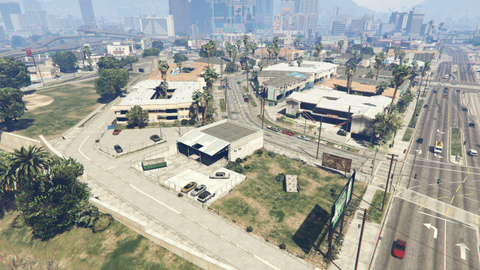
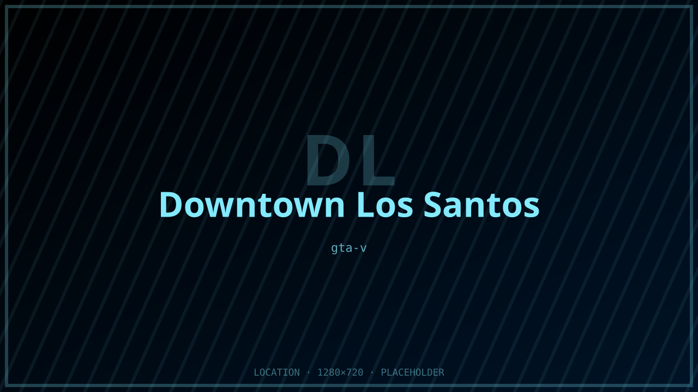
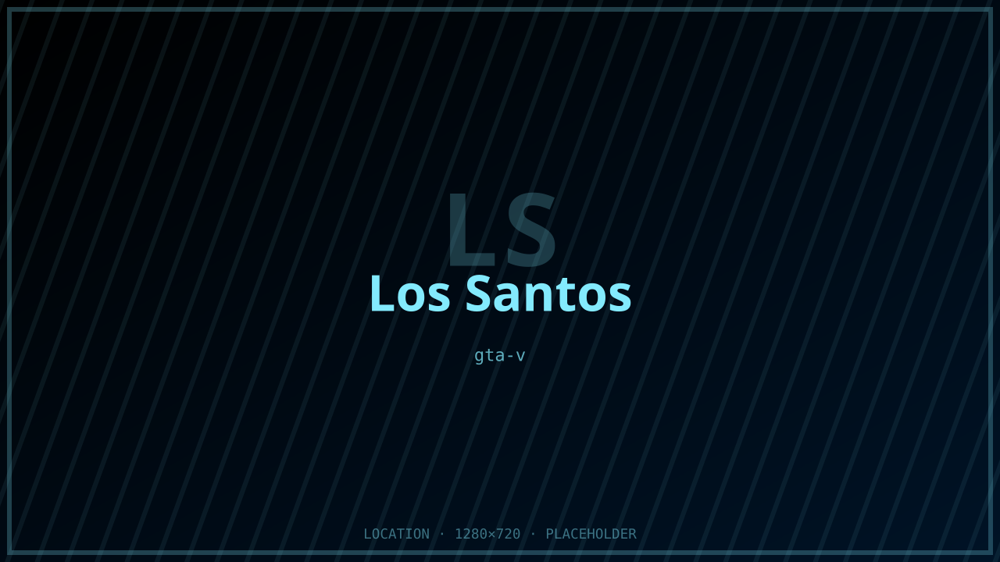
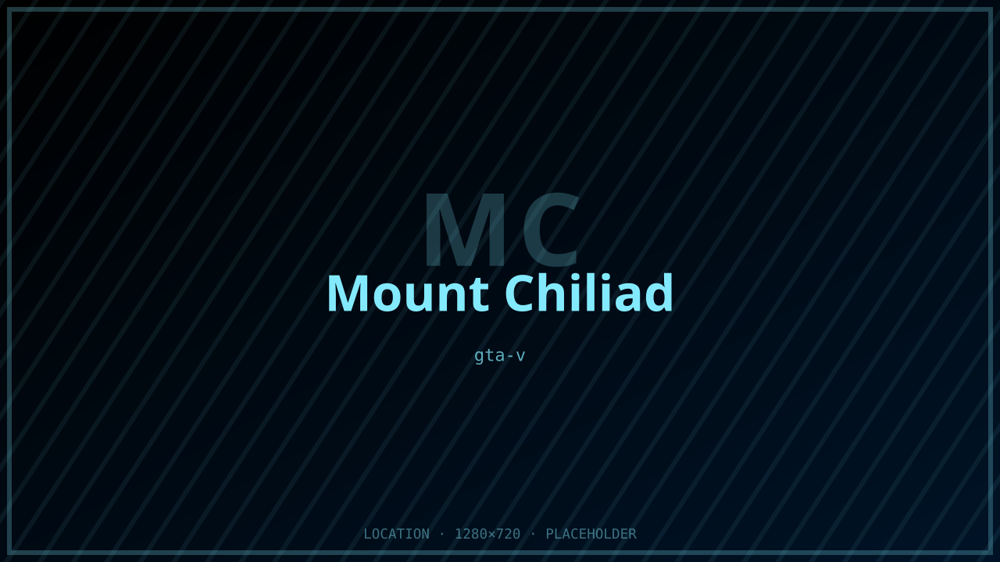
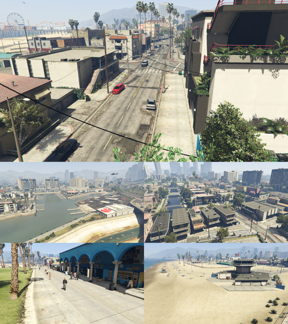

GTA V
Locations
 Blaine County Region
Blaine County Region
Chamberlain Hills Neighbourhood
Downtown Los Santos District Fort Zancudo Landmark
Fort Zancudo Landmark Humane Labs and Research Landmark
Humane Labs and Research Landmark
Los Santos City
Mount Chiliad Landmark Paleto Bay Town
Paleto Bay Town Rockford Hills District
Rockford Hills District San Andreas Region
San Andreas Region Sandy Shores Town
Sandy Shores Town- Union Depository Landmark

Vespucci District- Vinewood District
| Image | Location | Type | Parent area |
|---|---|---|---|
| Blaine County | Region | San Andreas |
| Chamberlain Hills | Neighbourhood | Los Santos | |
| Downtown Los Santos | District | Los Santos | |
| Fort Zancudo | Landmark | Blaine County |
| Humane Labs and Research | Landmark | Blaine County |
| Los Santos | City | San Andreas | |
| Mount Chiliad | Landmark | Blaine County | |
| Paleto Bay | Town | Blaine County |
| Rockford Hills | District | Los Santos |
| San Andreas | Region | — |
| Sandy Shores | Town | Blaine County |
| Union Depository | Landmark | Los Santos | |
| Vespucci | District | Los Santos | |
| Vinewood | District | Los Santos |